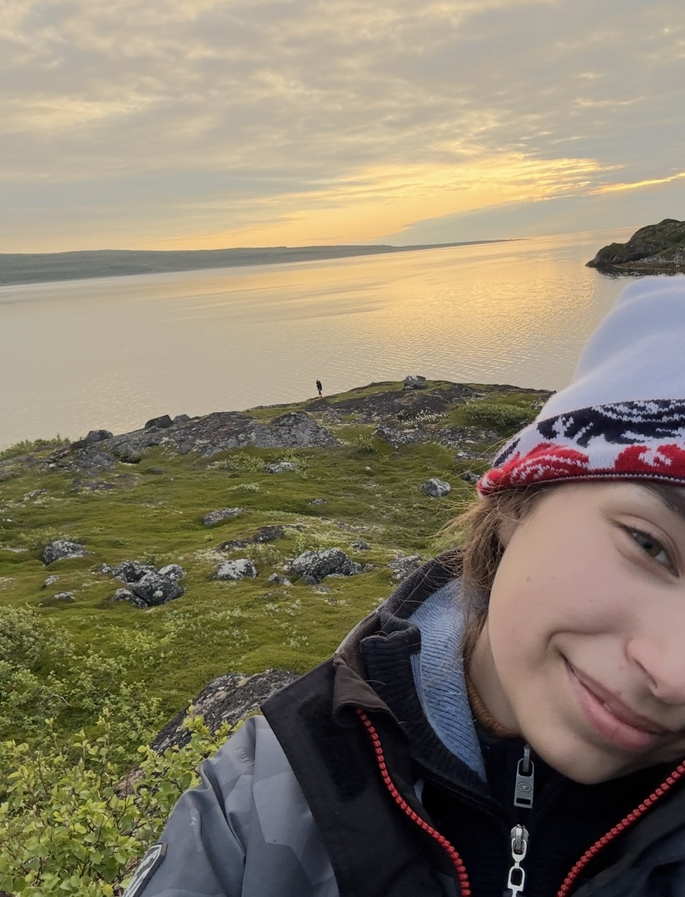

Об авторе

Впервые я побывала на севере в 2023 году, когда родители решили взять меня с собой на рыбалку. Остановились в Лиинахамари, прибрежном городке. Это было для меня чем-то новым: огромные сопки, карликовые деревья и, конечно, само море.
Да, это не тёплые края, где ты можешь ходить в футболке и шортах, но именно тут ты ощущаешь настоящую свободу и северный дух страны.
С того момента мы ездили туда каждый год, и с каждым годом Баренцево море открывало нам новые виды и эмоции. В один сезон нам посчастливилось увидеть китов, проплывающих вдоль берега — это было невероятно интересно и впечатляюще.
Данный проект я сделала для того, чтобы поделиться своими эмоциями и показать, что север России — это не только горы, но и множество интересных мест и ощущений.
О проекте
Баренцево море — место, где стрелка часов замирает и ты остаёшься наедине с собой, пением китов и бескрайними горами.